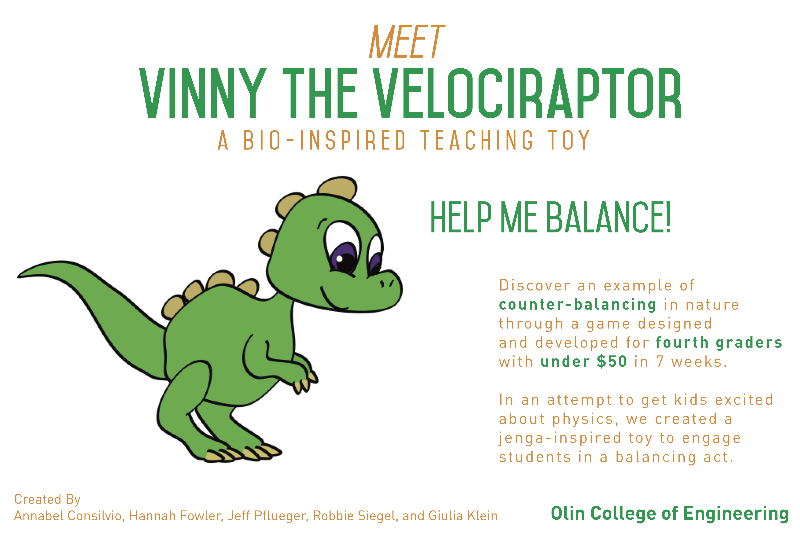
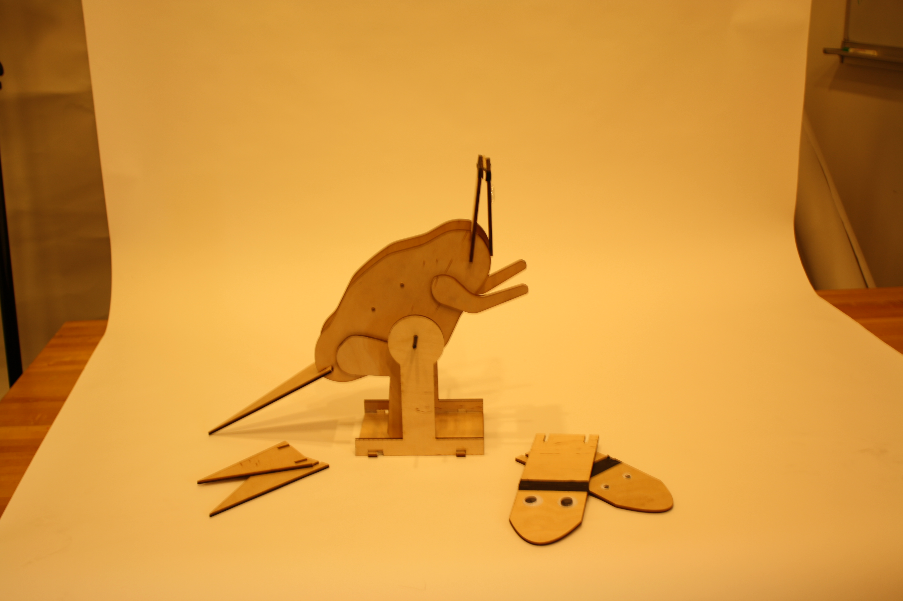

I'm a developer and designer based in Boston, MA.
With four teammates during the fall of 2014, I developed an educational children's toy based off of the counter-balance motion present in velociraptor movement. Dubbed Vinny the Velociraptor, the jenga-like balancing toy was created from laser-cut wood and developed over a 7 week period. Vinny has interchangeable heads and tails, so kids (and adults) can see what is like to try to balance a dinosaur with a huge neck and tiny tale and vise versa. We also included a variety of differently shaped blocks that could be used to balance Vinny out and subtly teach kids about the differences of weight and size. We worked with parents, teachers, and 4th graders alike to test the toy throughout development, and despite the wear-and-tear from having dozens of kids play with it, Vinny stayed strong. Our team also had the opportunity to take Vinny to a variety of expos where we caught the attentions of kids and adults alike.
 